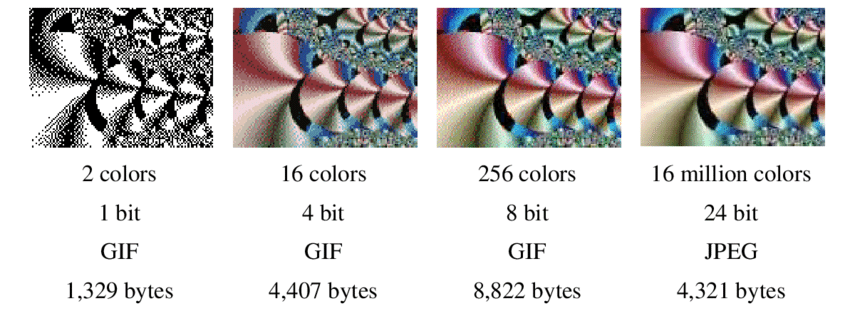
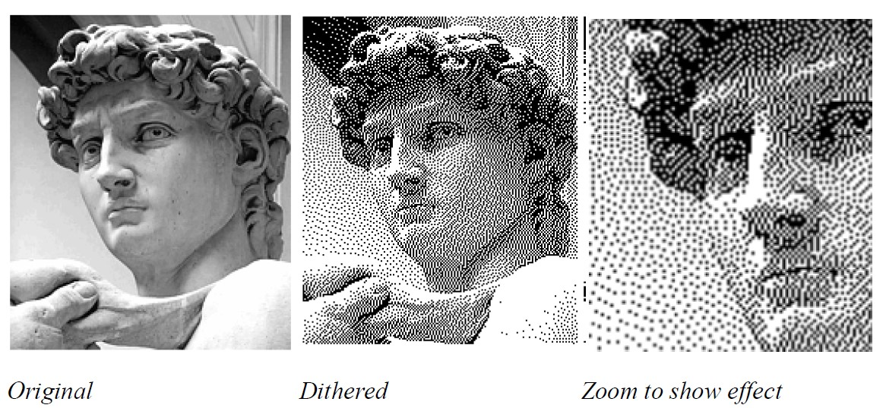
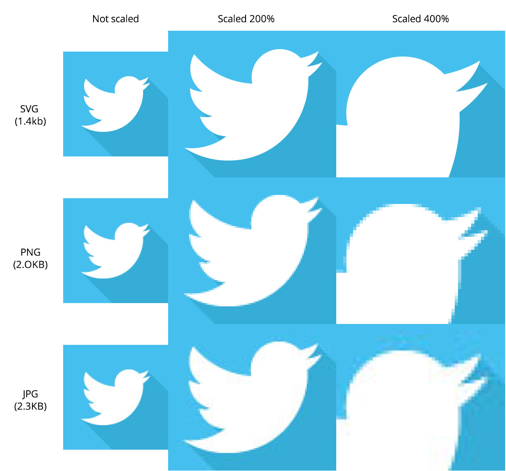

Image processing adalah sebuah bidang dalam ilmu komputer dan teknik pengolahan sinyal yang berfokus pada analisis, pemrosesan, dan manipulasi gambar atau citra digital. Tujuannya adalah untuk meningkatkan kualitas gambar, mengekstrak informasi yang berguna, atau membuat representasi visual dari data.
Seiring dengan berjalannya waktu, perkembangan gambar digital memiliki kemajuan yang pesat, baik dari segi kualitas hingga perbedaan format gambar yang digunakan sesuai dengan kebutuhan. Perkembangan tersebut menghasilkan berbagai macam tipe gambar, seperti gambar 1-bit, 8-bit, hingga 24-bit.
1 Bit VS 8 Bit VS 24 Bit
 Sumber gambar: Research Gate, Jacques du Plessis.Gambar 1-bit adalah jenis gambar biner yang hanya memiliki dua nilai warna, yaitu hitam dan putih. Setiap piksel dalam gambar ini hanya dapat memiliki satu nilai, yaitu 0 atau 1, yang mewakili warna hitam atau putih. Gambar 1-bit sering digunakan dalam grafik hitam putih atau pada aplikasi di mana hanya perlu menyimpan informasi biner, seperti logo, ikon, atau gambar kartun.
Gambar 8-bit gray level memiliki 256 level keabuan atau tingkat kecerahan yang berbeda. Setiap piksel dalam gambar ini direpresentasikan oleh sebuah bilangan bulat dalam rentang 0 hingga 255, di mana 0 mewakili warna hitam dan 255 mewakili warna putih. Gambar ini dapat menampilkan banyak nuansa abu-abu yang berbeda dan sering digunakan dalam aplikasi seperti pengolahan medis, pemrosesan citra, dan fotografi hitam putih.
Gambar 24-bit color adalah gambar berwarna yang paling umum digunakan dalam komputer. Setiap piksel dalam gambar ini direpresentasikan oleh kombinasi tiga komponen warna: merah (red), hijau (green), dan biru (blue), masing-masing direpresentasikan oleh 8-bit. Ini berarti setiap piksel memiliki 256 kemungkinan nilai untuk setiap komponen warna, menghasilkan total 16,777,216 (atau 2^24) kombinasi warna yang berbeda. Kombinasi ini memungkinkan gambar-gambar berwarna yang sangat detail dan realistis, sering digunakan dalam grafis komputer, fotografi digital, dan aplikasi multimedia lainnya.
Dithering Gambar
 Sumber gambar: JD Photo Data.Dithering dalam gambar merupakan teknik yang digunakan untuk mengurangi efek kekasaran pada gambar dengan kedalaman warna yang rendah, seperti gambar 1-bit. Teknik ini bertujuan untuk menciptakan ilusi warna atau nuansa abu-abu dengan cara menggunakan pola titik-titik kecil yang diatur secara acak atau terstruktur.
Dalam konteks gambar 1-bit, dithering bekerja dengan menyisipkan pola titik-titik hitam dan putih di sekitar tepi objek atau area di mana perubahan yang tajam terjadi. Ketika dilihat dari jauh, pola titik-titik ini menciptakan kesan nuansa abu-abu atau warna yang lebih lembut, meskipun gambar sebenarnya hanya memiliki dua warna.
Pada gambar dengan palet warna terbatas, dithering juga digunakan untuk menciptakan efek warna yang lebih halus dan meniru warna-warna yang tidak ada dalam palet tersebut dengan menggunakan campuran pola titik-titik yang berbeda.
Format Gambar
Format gambar BMP (Bitmap) adalah format raster yang dikembangkan oleh Microsoft. BMP tidak menggunakan kompresi, sehingga file gambar cenderung lebih besar daripada format lainnya, tetapi memiliki kualitas yang tinggi dan tidak mengalami kerugian detail.
Format JPG (JPEG) adalah format gambar raster yang menggunakan kompresi dengan kehilangan. Hal ini memungkinkan untuk mengurangi ukuran file gambar, namun dengan konsekuensi kehilangan sebagian dari kualitas gambar.
PNG (Portable Network Graphics) adalah format gambar raster yang menggunakan kompresi tanpa kehilangan. PNG cocok untuk gambar dengan area solid berwarna atau gambar yang memerlukan transparansi, dan menjaga kualitas gambar tanpa mengorbankan ukuran file.
SVG (Scalable Vector Graphics) adalah format gambar vektor yang menggunakan XML untuk mendefinisikan grafik. SVG memungkinkan gambar untuk diubah ukurannya tanpa kehilangan kualitas, cocok untuk grafik dengan efek animasi atau logo.
GIF (Graphics Interchange Format) adalah format gambar raster yang mendukung animasi dan transparansi. Meskipun memiliki keterbatasan dalam hal jumlah warna, GIF masih populer karena kemampuannya menyimpan animasi dengan ukuran file yang relatif kecil.